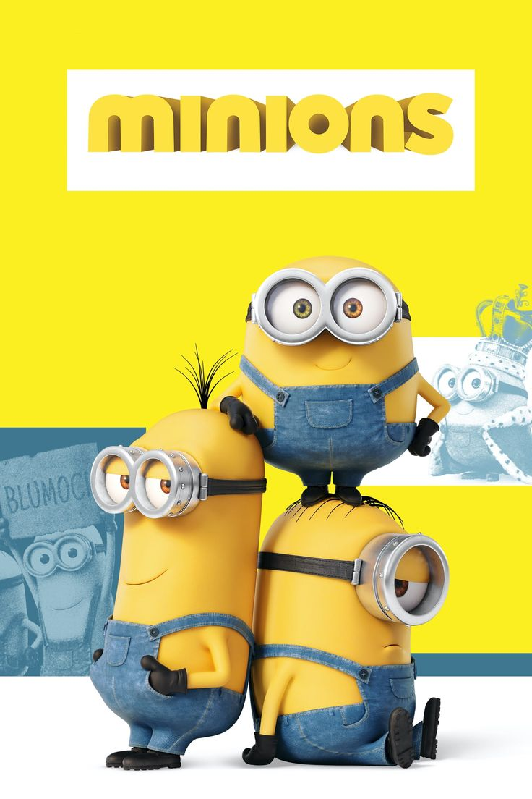

Apa itu Minions?
Minions adalah karakter animasi kecil berwarna kuning yang sangat lucu dan menggemaskan. Mereka suka bermain, bertualang, dan tentu saja membuat kekacauan yang lucu!
Minions berasal dari film animasi populer yang menceritakan petualangan mereka dalam membantu bos mereka, Gru, dalam berbagai misi seru.
